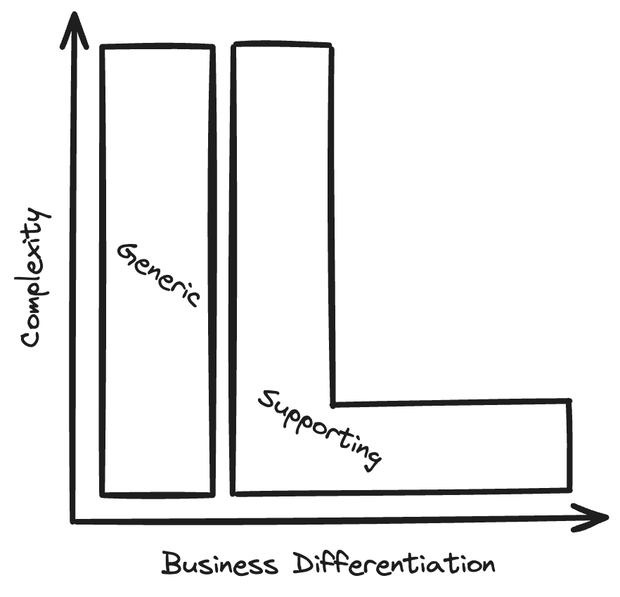
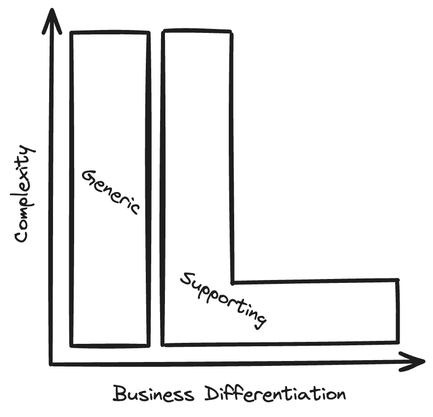

The mythical 0.2x engineer
The mythical 10x engineer
The mythical 10x engineer
- Exact origin unclear
- Coding challenges from the 60s / 70s where some participants were 10x better than others
- Refuted many times
Building the right thing
Building the right thing
- 80% of work in 20% of time
- 80%-solutions are sufficient for 80% of the use cases
How to find the right 80%
- Do CTTCs before development
- Keep iterations short, demand stakeholder feedback
- Ship to end-users as early as possible
- Learn from the past
- Core domain model
Core domain model
 


What about non-functional requirements?
What about non-functional requirements?
- Question requirements to load, uptime, support etc
- Design for scalabilty
Design for scalabilty
- In operation (horizontally)
- In organisation (DDD, allow team landscape to scale)
How to chose the right tech stack?
How to chose the right tech stack?
- KISS
- The Simplest Thing That Could Possibly Work
- Use a tech stack that is well-known within the organisation
Golden taps üèÖüö∞
How to keep business people from requesting golden taps?
- Demand sales to participate in development cycle
- Have them attend reviews, refinements etc
- Demand that they participate in CTTCs with actual users
And how to keep devs from building them anyway?
- 80/20 time for experiments
- Demand validation of techinal propositions
- Beware of classic anti-patterns: DRY, KISS, YAGNI, NIH
- Highly aligned, loosely coupled teams
- Make sure seniors with right mindset have time to mentor juniors
How to build a 0.2x organisation
How to hire the right people
- TODO
Conclusion
Conclusion
- Build organisation that allows devs to build the right thing
- Involve business people in development
- Encourage software craftsmanship